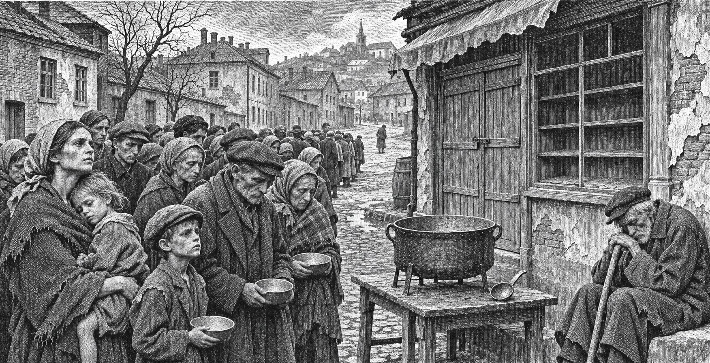

【蒼森特報】蒼森辺境伯と重臣らが殺害された後、領内の軍と行政を束ねる指揮系統は崩れた。各地の部隊は連絡と補給を欠き、反撃はその場に残る兵による散発的なものにとどまる。カペレナ王国との戦闘に向けた防衛線や兵站の組み直しも進まず、海岸と内陸を結ぶ備えは整っていない。第214期の蒼森は食料ゼロ。餓死者が各地で急増し、住民の流出と死亡が重なって人口は前期の二万八千三百人から一万六千三百人へ、一期で一万二千人減った。

食料の配給を待つ蒼森の住民。空の鍋と閉ざされた穀物店が、食料ゼロの町の窮状を伝える。
暴動は七か所に広がり、住民はカペレナのミサイル基地（18,10）と兵站基地（19,10）へ押し寄せて両施設を破壊した。王国側は同じ地点にミサイル基地を再建したが、蒼森側には各地の部隊を集めてこれに対抗する命令系統がない。食料の欠乏は兵の招集と輸送にも響き、前線を保つ以前に住民へ食糧を届ける手立ても失われつつある。
「領主も重臣も、肥え太った豚野郎どももいなくなった。あいつらが麦倉を空にし、兵を集めた末に残ったのが、この飢えと黒潮の軍勢か」――配給所の列に並んでいた女性は、空の椀を抱えたままそう語った。別の老人は「追い出せば暮らしが戻ると思った。だが畑を守る者も、軍を動かす者もいなくなり、今度はカペレナが来る。誰のために耐えたのか」と声を詰まらせた。領主一族と重臣の失政に怒り、彼らを処刑した市民の間には、解放の歓声に代わって、飢餓と侵攻を前にした悔恨が広がっている。
夜の市場では「山豚」と呼ばれる肉が、金ではなく毛布や鍋、農具との物々交換で人の手に渡る。細切れを包んだ紙を受け取った母親は、家に戻るまで中身を確かめず、煮汁を子どもに飲ませて自分は鍋底をさらったという。売り手は産地を告げず、買い手も尋ねない。市民の間でその名が何を指すのかは囁かれているが、飢えた者たちは一口を得るため沈黙を選ぶ。食料配給が途絶えた町では、物々交換の品さえ尽き始めている。
この混乱のさなか、黒潮自治国第2方面軍海兵隊は浅瀬を越えて蒼森沿岸（17,9）に上陸した。蒼森歩兵三部隊は隣接地から反撃したものの、連携した反攻には至らず、黒潮側は上陸地点を確保。公報上の損害は蒼森二千六百人、黒潮五千人に達した。黒潮軍も軽い損害では済まなかったが、蒼森に海岸を奪い返す予備兵力と統一指揮があるかは見通せない。
潮見玄吾・黒潮自治評議会議長は本紙に「大陸反攻は、蒼森の海岸に海兵隊を上げた今日、言葉から作戦に移った。渡る岸も進む順序も黒潮が決める。小さな辺境伯領に大陸の針路を定める力はない。浜を取り戻したいなら兵を揃えて来ればよい。わが軍は次の一歩を止めない」と語った。蒼森の指揮崩壊と飢餓を前にした、勝者を自任する強硬な声明である。
黒潮軍が上陸地点（17,9）を保てば、首都ブロースコーグ（20,10）に近い沿岸から内陸へ進む足場を得る。黒潮の人口は三万三千二百人、領土は二区画。蒼森は人口一万六千三百人、領土十四区画だが、食料の備蓄は尽き、餓死者と暴動が増えている。広い領土を守る兵を配置するにも、命令を伝え、食料と弾薬を運ぶ組織が欠けたままでは、地図上の区画数は防壁にならない。
蒼森はカペレナと黒潮へ停戦を打診した。だが、交渉の返答を待つ間にも住民は飢え、黒潮海兵隊は浜にとどまる。領内の部隊を再び一つの指揮下へ置き、食料を確保できるか。蒼森の命運は、反撃の号令より先に、統治と救援の仕組みを立て直せるかにかかっている。